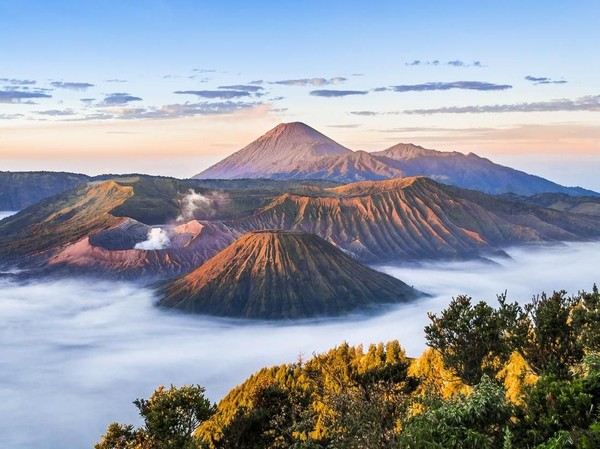
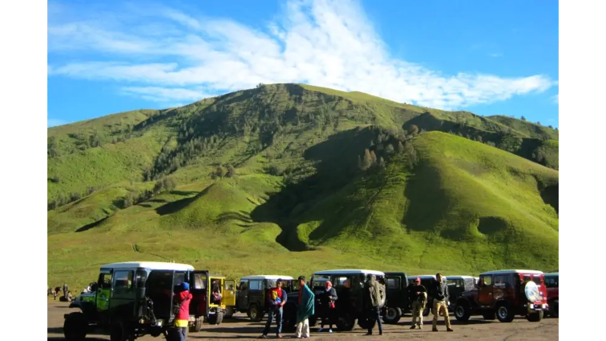
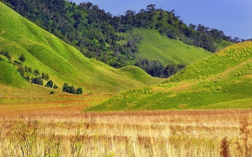
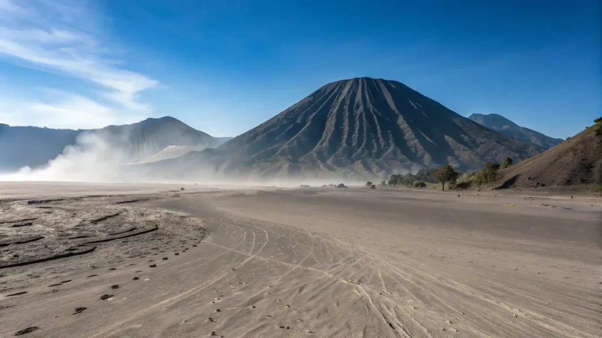
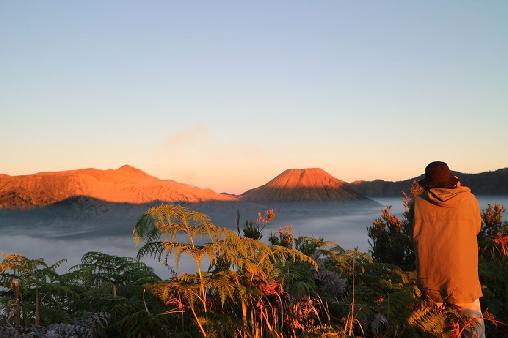
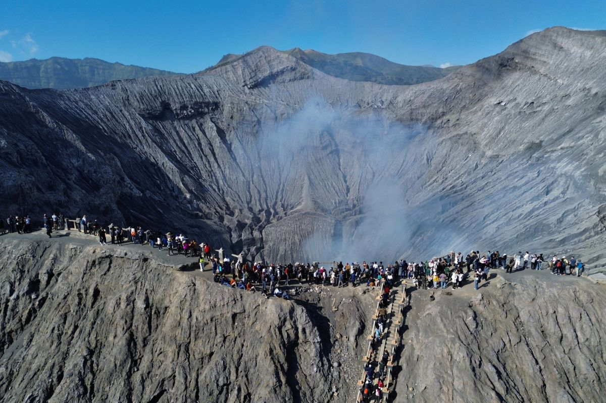
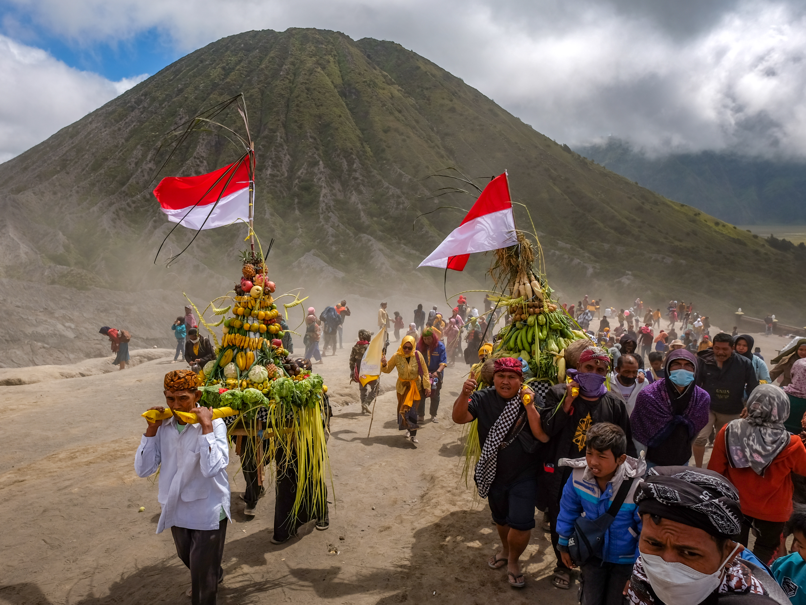

Wisata Gunung Bromo di Indonesia
Oleh: Kristalyn 91/22

Gunung Bromo adalah sebuah gunung berapi aktif yang terletak di Jawa Timur, Indonesia. Gunung ini merupakan bagian dari kawasan Taman Nasional Bromo Tengger Semeru, yang juga mencakup Gunung Semeru, gunung tertinggi di Pulau Jawa. Berada pada ketinggian sekitar 2.329 meter di atas permukaan laut, Gunung Bromo memiliki pemandangan alam yang spektakuler dan menjadi salah satu destinasi wisata paling populer di Indonesia. Daya tarik Gunung Bromo yang istimewa adalah kawah di tengah kawah dengan lautan pasirnya yang membentang luas di sekeliling kawah Bromo yang sampai saat ini masih terlihat mengepulkan asap putih setiap saat, menandakan Gunung ini masih aktif.
Spot Tempat Wisata sekitar Gunung Bromo

Bukit Teletubies

Padang Rumput Savana

Pasir Berbisik Bromo

Bukit Mentigen

Terletak di sebelah selatan Kota Surabaya dengan jarak tempuh sekitar 3 sampai 4 jam, Gunung Bromo adalah salah satu gunung berapi aktif yang berada di Jawa Timur. Gunung ini dikelilingi oleh hamparan pasir yang luas, yang terbentuk dari material hasil letusan gunung. Selain itu, Gunung Bromo juga dikelilingi oleh perbukitan yang tinggi serta bebatuan yang membuat pemandangan di sekitarnya terlihat sangat indah dan alami. Gunung Bromo memiliki suasana yang sejuk dengan udara yang cukup dingin, terutama pada pagi hari. Salah satu pemandangan yang banyak dinikmati oleh wisatawan adalah matahari terbit. Ketika matahari mulai muncul, langit perlahan berubah warna dan memberikan pemandangan yang sangat indah di sekitar gunung. Hamparan pasir yang luas juga membuat kawasan Gunung Bromo memiliki ciri khas tersendiri.
Selain menikmati matahari terbit, wisatawan juga dapat mengunjungi Kawah Bromo dengan berjalan kaki atau menggunakan kendaraan yang tersedia di sekitar kawasan wisata seperti mobil jeep, dll. Gunung Bromo juga memiliki hubungan yang erat dengan masyarakat Suku Tengger yang tinggal di sekitar kawasan tersebut. Setiap tahun, masyarakat Tengger melaksanakan upacara Yadnya Kasada sebagai bentuk penghormatan dan rasa syukur. Upacara ini menjadi salah satu tradisi budaya yang menarik perhatian wisatawan. Dalam upacara tersebut, masyarakat Tengger membawa berbagai hasil bumi dan sesaji ke arah kawah Gunung Bromo sebagai bagian dari tradisi mereka. Keberadaan tradisi ini menunjukkan bahwa Gunung Bromo tidak hanya memiliki keindahan alam, tetapi juga memiliki nilai budaya dan sejarah yang penting bagi masyarakat sekitar. Keindahan alam dan budaya yang terdapat di sekitar Gunung Bromo membuat tempat ini tidak hanya menarik untuk dikunjungi, tetapi juga menjadi salah satu tempat yang memiliki keunikan tersendiri di Indonesia. Oleh karena itu, wisatawan perlu menjaga kebersihan dan kelestarian lingkungan dengan tidak membuang sampah sembarangan serta mengikuti aturan yang berlaku. Dengan menjaga lingkungan dan menghormati budaya masyarakat setempat, keindahan Gunung Bromo dapat terus dinikmati oleh wisatawan pada masa sekarang maupun generasi berikutnya.
